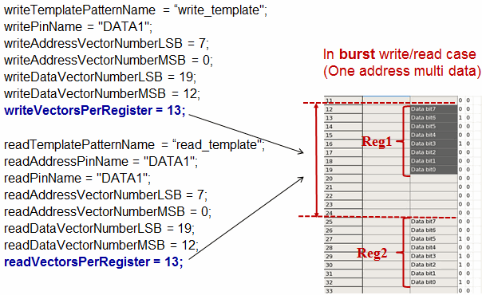

SmartRDI: d2s-like protocol test setup
SmartRDI provides the protocol() class and following related functions
to set up protocol tests.
Overview of protocol() class functions
| Function | Description | Mode |
|---|---|---|
| pname() | Specify a protocol to be used in a protocol test. | P |
| read() | Specify an address to read data. | P |
| readExpect() | Specify an address to read the data and compare the data with expected data. | P |
| regNum() | Specify a register number for read() to read data. | P |
| write() | Specify an address and data for writing the data to the address. | P |
| writeBurst() | Specify an address and a burst of data for writing the data to the address. | P |
| getData() | Retrieve data from a specified address. | N/A |
| getDataStream() | Retrieve collective data from a specified address. | N/A |
| getPassFail() | Retrieve pass/fail results from a protocol test. | N/A |
In the Mode column: C = Code-based, P = Pattern-based, N/A = Not Applicable.
Template file
SmartRDI provides a template file for you to create your own protocol.
With these provided functions, you can:
- Write the data to and read the data from the specific address.
- Write and read multiple data for the address. You need to configure the parameter
writeVectorsPerRegister and readVectorsPerRegister in
the protocol template as shown in the figure below:

- Set up the data to write at runtime.
- Write the data to and read the data from multiple pins with the parameter writePinName and readPinName in the template. The parameter dataMode controls the sequence to read and write the data of multiple pins.
Note This class does not support hidden upload
features.
| Item | protocol() | smartVec() |
|---|---|---|
| Pattern | The template pattern will be copied for each rdi.protocol().... command, which may take a longer time in the first run after build. | The pattern is created in the first run after build. |
| Reading data | Only for emap(). | For both emap() and digCap() by default. |
| hidden upload features | NOT support. | Support. |
Examples
Basic data reading and writing
ON_FIRST_INVOCATION_BEGIN();
RDI_BEGIN();
rdi.protocol().pname("i2c").write(0x1,0x2).execute();
rdi.protocol("id2").pname("i2c").read(0x1).execute();
rdi.protocol("id3").pname("i2c").readExpect(0x1,0x03).execute();
rdi.protocol("id4").pname("i2c").readExpect(0x1,0x03,0x1).execute();
RDI_END( );
ON_FIRST_INVOCATION_END();
int result=rdi.id("id2").getData();
int pf=rdi.id("id3").getPassFail();Burst data reading and writing
ARRAY_I data(3);
data[0]=0x9; data[1]=0xa; data[2]=0x7;
ON_FIRST_INVOCATION_BEGIN();
RDI_BEGIN();
rdi.protocol().pname("prt").writeBurst(0x1,data).execute();
rdi.protocol("id1").pname("prt").regNum(3).read(0x01).execute();
RDI_END( );
ON_FIRST_INVOCATION_END();
ARRAY_I result=rdi.id("id1").getDataStream();Runtime data writing
ARRAY_I write_data(2);
write_data[0]=0x1;
write_data[1]=0x2;
rdi.runTimeVal("data",write_data); // site data array
RDI_BEGIN();
rdi.protocol().pname("i2c").writeBurst(0x4,"data").execute();
RDI_END();Functional changes
- Introduced in SmartRDI 2.1.0